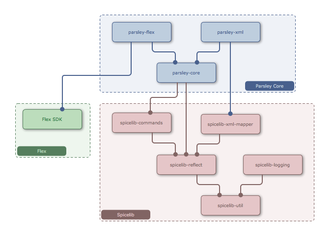

Parsley is an Application Framework for Flex and Flash Applications built upon an IOC Container and Messaging Framework that can be used to create highly decoupled architectures. It allows you to configure objects to be managed by the container with Metadata, MXML, XML or ActionScript and is easily extensible.
While many other Application Frameworks for the Flash Platform are either a pure Flex Framework that cannot be used without the Flex SDK or are a classic Flash Framework without any deeper integration with Flex, Parsley is both. The core of the framework (the IOC Container and the Messaging Subsystem) does not depend on the Flex SDK at all, but there are several additional modules that are specifically designed for Flex, providing support for MXML Configuration, View Wiring and Flex Modules.
This section gives a quick overview over the available features linking to the other chapters of the manual where appropriate. There is also a 2 Getting Started chapter containing a few sample use cases for the impatient.
IOC Container
Parsley is a classic IOC Container. It provides support for Dependency Injection, Object Lifecycle Management and Messaging. The key differentiator is the scope of the framework: While still being as easy to use as many smaller IOC frameworks for simple applications, it also provides many features which are essential for building large, complex and modular applications and numerous extension points.
Dependency Injection
The core feature of any IOC Container. Dependencies can be conveniently declared using AS3 Metadata
Tags ([Inject]) on properties, methods or constructors or alternatively with MXML or XML.
See 4 Dependency Injection for details.
Decoupled Bindings
A feature similar to the concept of Flex Bindings, with the difference that the target does not have to know
the source of the binding. The source publishes an object on a property marked with [Publish] and any
other object may receive all updates of that value in a property marked with [Subscribe].
See 5 Decoupled Bindings for details.
Messaging
Parsley contains a Messaging Framework that allows for objects to send and receive messages in a fully decoupled way.
You can mark a function property with the [MessageDispatcher] tag, and invoke it whenever you want to pass
a message instance to the system to be routed to registered receivers. The receiving objects can declare interest
in particular message types with several metadata tags like [MessageHandler] in a type-safe way.
This is because message selection happens based on the type (class) of the message, instead of being purely String based
like with regular AS3 event handlers. Furthermore messaging can happen in different scopes, globally or just in a particular region
(like an AIR window for example).
See 6 Messaging for details.
Managed Commands
Parsley supports commands based on the standalone Spicelib Commands framework. It allows to execute commands in a way that the container automatically adds them to the Context just for the time they execute. It comes with MXML and XML tags to declare commands or sequences of commands. It allows to map commands to messages so that each matching message causes a new command to be instantiated and executed. Alternatively command factories can get injected into managed objects for manual execution. See 7 Managed Commands for details.
Object Lifecycle
8.5 Object Lifecycle Methods: Objects can have methods marked with [Init]
(which will be invoked after the object has been instantiated and configured) or [Destroy] which will be
invoked when the container gets destroyed.
8.3 Asynchronous Object Initialization: Configuration option for asynchronously initializing objects (e.g. objects that need to load data before they can operate). In this case the container will defer the initialization of other objects until those configured to be asynchronous are ready.
Dynamic View Wiring
This module is particularly useful for Flex and solves the problem that you usually wouldn't want to declare Flex Components in IOC Container configuration files, but instead inside your MXML view hierarchy like always. Parsley allows to connect these components to the IOC Container on-the-fly when they are added to the stage. Also solves the more complicated issues with wiring components in Flex Popups or Native AIR Windows. See 9 Dynamic View Wiring for details.
Support for Modular Applications
For modular applications it's essential that you can create configuration sub-contexts and dynamically load and undload them as needed. Seamlessly integrates with Flex Modules, but can also be used without. The framework allows for a very fine-grained hierarchy of Contexts, making it convenient to create separate communication spaces for individual windows, popups or tabs in your application. See 10 Building Modular Applications for details.
Localization
Allows to bind properties to resources with the [ResourceBinding] tag. Integrates with the
Flex ResourceManager for Flex Applications and contains its own Localization Module for Flash Applications.
See 12 Localization for details.
Extensibility
Parsley can serve as the base for building higher-level frameworks on top of. Or you may just want to create some additional configuration tags for use cases which are frequent for a particular application. Parsley is easy to extend. A single implementation of an extension interface can be used to create a custom configuration tag that can be used as a Metadata, MXML or XML tag. Furthermore basically all central services of the IOC kernel can be swapped out easily. See 13 Extending the Framework for details.
This section only lists the parts of the manual which are new or have been signifantly modified. For general migration steps see the next section.
Task Framework
Migration steps are primarily necessary in 2 areas: Command Support and Extension APIs. Apart from that some APIs have been moved to new packages to improve the internal decoupling of the framework, but these changes only require a simple Organize Imports. Many other areas remained unchanged, like all configuration tags (MXML, XML and metadata) apart from those for Commands.
The API of Parsley 3 is intended to be a long-term stable API. If you followed the Parsley 2 releases you may have noticed that even second digit changes in version numbers often meant breaking API changes. This was because Parsley significantly evolved in its version 2 lifetime based on the growing adoption in large-scale enterprise projects. This fast evolution will come to an end with Parsley 3, where even a future releases of versions 3.1 or 3.2 are intended to be drop-in replacements for existing applications without any migration steps. Therefore it is strongly recommended to move to Parsley 3 at some point, as it will allow you to benefit from future enhancements and fixes without further changes on your side. On the other hand Parsley 2 will not see any further enhancement or bugfix releases, so staying with that version would mean that you'd have to find workarounds yourself.
Parsley 3 is also the cleanest release to date. With all deprecations being removed and other areas of the code base being streamlined, it is the best version so far for anyone with the intention to learn, enhance or modify the code base.
If your application still uses an older version of Parsley 2, it is recommended to first try to replace the SWCs in your classpath with the ones for the last Parsley 2 release (2.4.1). That release contained a lot of deprecation warnings already. Trying to compile against that version might give you a list of deprecation warnings with concrete instructions on what to change. In Parsley 3 all deprecations have been removed, so you won't get any warnings when compiling against that version. Once you have adjusted your code to remove the warnings and errors you get, you can more easily move to version 3.0.
This section tries to give a detailed overview over the most important changes. If you think that something essential is not covered here, please post on our forum.
Some of the core APIs have been repackaged, primarily the various configuration DSLs have
been moved. The most likely candidates for frequent use in applications are the ContextBuilder,
Configure and FastInject APIs. The corresponding MXML tags are not affected, only
the APIs. Only an Organize Import is required to migrate here, with the only exception being some
of the lower level options of the ContextBuilder API as covered in the next section.
If you used the ObjectDefinitionBuilder API, either to implement a custom tag or
in setup code via ContextBuilder.objectDefinition().forClass(MyClass) then you'll notice
that the options have been reduced. They are not gone, they are just no longer hard-coded into the
ObjectDefinitionBuilder API to make it easier to build custom Parsley distributions with a reduced or different
set of pre-installed configuration tags. You do not have to restructure anything, everything can be
adjusted via in-place changes. An example for configuring a message handler via API is shown below:
Before:
var builder: ObjectDefinitionBuilder = ...;
builder
.method("handleMessage")
.messageHandler()
.scope(ScopeName.GLOBAL)
.type(MyMessage)
.order(10);
After:
var builder: ObjectDefinitionBuilder = ...;
MessageHandler
.forMethod("handleMessage")
.scope(ScopeName.GLOBAL)
.type(MyMessage)
.order(10)
.apply(builder);
As you see the message handler is just no longer available through the builder API, but instead comes with a static, standalone entry point. The class name for the API is always the same as the name of the corresponding metadata or MXML tag.
The biggest area of change in Parsley 3 is the completely rewritten Command Support. The new implementation is not backwards-compatible, although in most cases migration is trivial and possible without touching the command implementation itself (only changes in configuration files and classes are required).
If you have an existing application based on Parsley 2 that uses commands a lot, you basically have 2 options:
<DynamicCommand> to <MapCommand>, but usually no changes in the
command implementation. Once you've decided on the route you want to take, you can find detailed instructions for both approaches below.
You can download this extension from the Parsley download page. Depending on what features you have used in your Parsley 2 application, an additional tag in your first ContextBuilder might be necessary:
<DynamicCommand> MXML tag: Comes for free as soon as the extension is in your classpath. <dynamic-command> XML tag: Needs the <LegacyDynamicCommandXmlSupport/> tag inside the first
ContextBuilder tag. [Command] metadata tag: Needs the <LegacyCommandMetadataSupport/> tag inside the first
ContextBuilder tag. The full support for all features listed above would be restored with the following builder:
<parsley:ContextBuilder config="{MyConfigClass}">
<parsley:LegacyCommandMetadataSupport/>
<parsley:LegacyDynamicCommandXmlSupport/>
</parsley:ContextBuilder>
Once the legacy command support is initialized most of your existing commands should run out of the box. The few exceptions where usage of some of the more exotic features would need some adjustments are listed below:
stateful attribute on the <DynamicCommand> tag is no longer supported.
Commands in Parsley 3 are always short-lived. If you have set this attribute to true on one of your
commands, you can change it into a regular <Object> tag and then add the old [Command]
metadata tag on the execute method. This should retain the old behavior, as the Object tag creates
a singleton which has the same effect as marking the command as stateful. ResultEvent
or FaultEvent. They need to switch to the actual result or fault instances carried by these events. MessageProcessor to the execute method of the command.
This is no longer supported in Parsley 3, a command can no longer suspend or cancel the message that triggered
the command. This functionality would have been impractical in Parsley 3, as the new version also allows
to conveniently declare sequences or flows of commands and then map them to messages. All individual commands
in the sequence can then accept the trigger message as a parameter, but any influence on the actual message
processor is not possible, as the message processing might have long been finished when the command is executed
after other asynchronous commands in the sequence. CommandObserverProcessor to a result handler in your
dynamic command to change the result, you have to adjust the call from processor.command.setResult(...)
to processor.changeResult(...). If you want to fully migrate your commands you do not have to include the SWC for the legacy command support. Instead you have to apply all the changes listed above (which are even necessary when using the legacy command support) plus several additional adjustments listed below.
Configuration Changes
The <DynamicCommand> tag does no longer exist in Parsley 3. The new version supports many ways
to execute a command. Mapping it to a message that triggers command execution is just one of them. Therefore
this feature comes with a new tag that explicitly states this intent, it's called <MapCommand>.
In many cases this is just a name change:
Before:
<parsley:DynamicCommand type="{LoginCommand}"/>
After:
<parsley:MapCommand type="{LoginCommand}"/>
But if you also added further configuration for the command with child tags, the syntax needs to change
as they can no longer be immediate children of the MapCommand tag. This is because Parsley 3 also
allows the definition of sequences or flows inside MapCommand, so that different child tags can
be nested. If you want to configure a single command to be mapped to a message, the following change is
necessary:
Before:
<parsley:DynamicCommand type="{LoginCommand}">
<parsley:Property name="mode" value="auto"/>
</parsley:DynamicCommand>
After:
<parsley:MapCommand />
<parsley:Command type="{LoginCommand}">
<parsley:Property name="mode" value="auto"/>
</parsley:Command>
</parsley:MapCommand>
Finally the names of the execute, result and error method can no longer be changed. It is always the convention
to name them execute, result and error respectively.
Implementation Changes
Like already mentioned the command implementations can stay the same in probably more than 90% of the cases. One option that had been changed is how you can overwrite a result in a result handler inside the command:
Before:
public function result (result: XML, processor: CommandObserverProcessor): void {
var user: User = parse(result);
processor.command.setResult(user);
}
After:
public function result (result: XML): User {
var user: User = parse(result);
return user;
}
If you are using the <ContextBuilder> MXML tag to create the first
Context of the application, all Flex support provided by Parsley is initialized
automatically, as the MXML tag is Flex-specific. On the other hand the
ContextBuilder API is now part of Parsley Core which does not
depend on Flex. If you create the first Context of a Flex application with this
API, you need to call the following initialization method once first:
FlexSupport.initialize();
ContextBuilder.newBuilder() [...]
Again, this is not required when you use the <ContextBuilder> MXML
tag or use this API for creating subsequent Context instances.
If you declared a message error handler in Parsley 2, then you need to adjust the order of parameters:
Before:
[MessageError]
public function handleError (processor: MessageProcessor, error: Error): void
After:
[MessageError]
public function handleError (error: Error, processor: MessageProcessor): void
This change has been made to align this tag with all other types of message handlers where the (optional) processor parameter always comes last. You can also now additionally map the error handler by message type like with all other types of message receivers:
[MessageError]
public function handleError (error: Error, message: LoginMessage, processor: MessageProcessor): void
If you wrote custom configuration tags or other types of extensions, you may need to adjust
them one final time. In particular the ObjectProcessor interface has been adjusted one
more time. It took some time to get the balance between robustness, flexiblity and simplicity right.
In Parsley 3 the interim ObjectProcessorFactory has gone, you can now directly add
an ObjectProcessor to an ObjectDefinitionBuilder. This removes the need for
cumbersome plumbing, in particular if the processor is stateless. For a stateful processor you
now have to implement the optional StatefulProcessor interface, which adds a simple
clone method in case the same processor needs to get applied for another target object.
ObjectProcessor interface - before:
function preInit (): void;
function postDestroy (): void;
ObjectProcessor interface - after (allowing for stateless implementations):
function init (target: ManagedObject): void;
function destroy (target: ManagedObject): void;
New optional interface StatefulProcessor, extending ObjectProcessor:
function clone (): StatefulProcessor;
This method should create a clone of the processor without any state that you kept for a particular managed object
Applying a processor - before:
var builder: ObjectDefinitionBuilder = ...;
builder
.lifecycle()
.processorFactory(MyProcessor.newFactory(someParam));
Although not mandated it was a common pattern to add a static factory method to processors to create a factory for new instances. With the new optional clone method, a factory is now obsolete.
Applying a processor - after:
var builder: ObjectDefinitionBuilder = ...;
builder
.process(new MyProcessor(someParam));
There are also some new options, like using a dedicated PropertyProcessor or MethodProcessor
subinterface when implementing processors that just deal with one member of the target instance (which is the case
for the majority of processors), and convenient target property and method validation as well as the option to specify
the exact phase the processor is applied to a target instance in case the order matters. The new options are explained
in 13.2.4 The ObjectProcessor Interface.
There are two common use cases where you might want to build the framework's SWC files yourself: either you want to apply a fix or enhancement to a local copy or you want to build snapshots from master to take advantage of fixes or enhancements before they make it into the next official release. In both cases it's recommended to check out the project from GitHub. This way you can easily follow the ongoing development. Building from source should be pretty straightforward, so this section just gives you a brief summary of the necessary steps.
The instructions below apply to all projects, Parsley Core, as well as all Spicelib libraries and Parsley extension projects.
Check out Parsley from GitHub
Parsley 3 is hosted on GitHub. If you just want to add something to an official release, it's best to check out the corresponding tag. If you want to follow the ongoing development of the next version and build snapshots you should check out master.
Edit the Properties File
Next you have to adapt the properties for your environment, all projects have a template file called build.properties.tmpl
in the build directory. Create a copy of that file under the name build.properties and edit it as instructed in the
comments inside this file.
Run the Ant Targets for building the SWCs
Finally you just have to pick the corresponding Ant target. Projects that just produce one SWC have a single compile
target, whereas some projects have multiple targets for compilation.
The SWCs are built into the directory release/<version>/release.
Parsley and Spicelib get released in a number of separate SWCs. You only have to add the SWCs to your classpath if you need the corresponding functionality. Spicelib is a set of libraries that do not depend on Parsley and also mostly not on each other. Parsley builds functionality on top of them.
The diagram below shows the dependencies between these artifacts. For Parsley only the SWCs provided by the Parsley Core project are included, for the sake of clarity. The dependencies of the various Parsley extension projects are listed in the table below the diagram.
Dependencies of Parsley Core and Spicelib Artifacts
Dependencies of Parsley Extension Projects
All extensions depend on parsley-core (including all transitive dependencies).
Additional dependencies are listed below (omitting transitive dependencies which you can see in the diagram above).
XML Tags for Flex Logging | parsley-flex, parsley-xml |
XML Tags for Spicelib Logging | spicelib-logging, parsley-xml |
Flash Localization | parsley-xml |
Parsley Popup | parsley-flex, popup (from Cairngorm 3) |
Pimento Support | pimento, cinnamon |